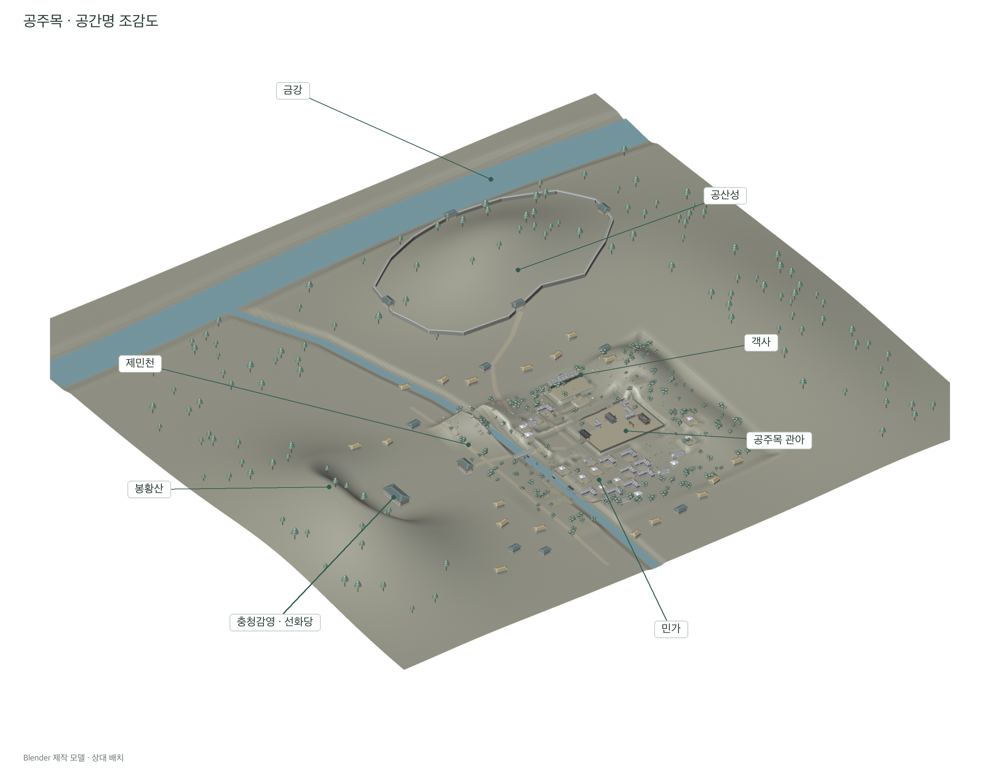
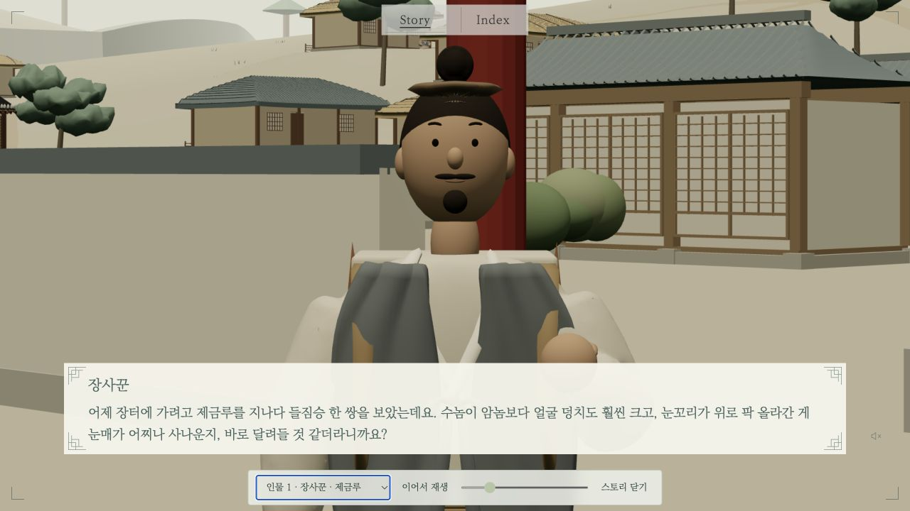

본문으로 건너뛰기
石
봉황동 석사자
기획과 제작으로
Story · 02
Blender 공간과 애니메이션
공주목 지형·건축물을 만들고, 카메라·인물·건물의 움직임을 시험했습니다.
Blender 제작 자료

강과 산, 주요 건축물과 민가의 상대 위치를 정리한 Blender 작업 모형입니다.
금강과 제민천, 공산성, 객사와 민가의 상대적인 배치를 정리한 3D 공간입니다.
공간 배치를 바탕으로 그림체와 풍경의 분위기를 확인한 이미지입니다.

같은 대화 장면의 초기 3D 구성입니다. 인물 크기와 화면 위치, 건축물과 대사 영역의 관계를 확인했습니다.